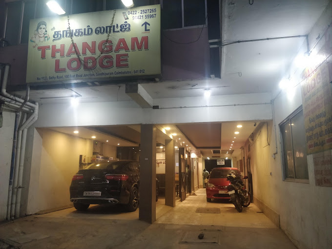
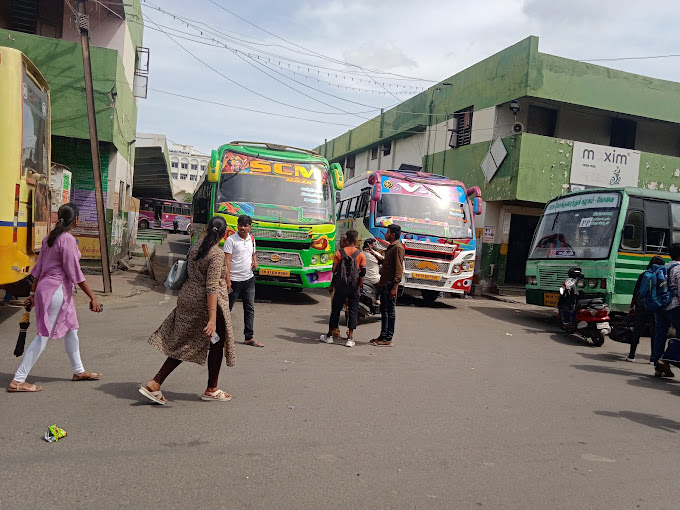
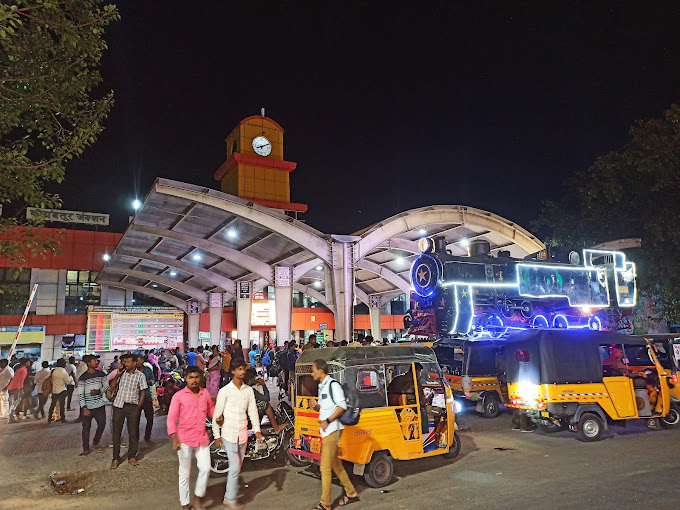

Play Music & Continue Scrolling
We started our journey at the busy railway station, full of excitement. The Coimbatore Intercity Express took us towards Ooty, ready for the adventure ahead.
Jubair brought in some mouthwatering homemade briyani, and we couldn’t wait to dive in! With no utensils, we dug in with our hands, making it even more memorable.
Taken on our night train ride to Coimbatore.The moon lit up the sky as we traveled.
All tired and drowsy, we're just counting the minutes to reach Coimbatore. The long night on the train is wearing us down.
Arrived at Coimbatore late at night, tired and hungry. All we could think about was getting to our rooms for dinner

📠Arrived at Thangam Lodge,
Coimbatore
Checked in at Thangam Lodge, Coimbatore, and got our room keys. Feeling drowsy and hungry, we settled down and ate the food we packed from home. Had a quick dinner in the room before finally resting for the night
After dinner, we got our rooms, freshened up. One room was on the 3rd floor, and Parthiban and Jubair got scared, so they joined Sai and me(DC). We ended the night with some horror stories before going to sleep!
We had breakfast at A.K.S. Mess, which served both Kerala and Tamil Nadu style dishes. Some of us had idli, while others went for puttu and dosa. After this delicious meal, we were ready for the long day ahead!

📠Got a Bus to Mettupalayam
We quickly hopped on a government bus from Coimbatore to Mettupalayam, heading to Black Thunder. Feeling fresh and excited!

We reached Mettupalayam bus stand and started looking for a bus to Black Thunder. However, our friend Dhinesh Reddy felt sick and had to stop for a moment. We quickly found an auto and are now on our way to Black Thunder!
We arrived at Black Thunder, ready for an exciting day ahead. It was pure joy and fun all around!
Arriving in Ooty, we split up for dinner plans. Parthiban and Jubair headed to Hotel Prabhu to grab chicken fried rice, while the rest went straight to our rooms. Reunited with warm food, we settled in for the night.
Our rooms were quite comfortable, with a chill vibe from the constant rain in Ooty. After freshening up and eating, we enjoyed a peaceful, restful sleep.
Woke up and went for a walk around Ooty. Stopped for a warm cup of tea to start the day.
Before heading out to explore Ooty, we were doing some warm up 😂
We left our rooms and had breakfast at a small mess and headed to the flower exhibition in Ooty.
Parthiban's unforgettable slip—one small fall, one big memory!
Got an auto at the flower exhibition entrance, visited the tea and chocolate factory—came back with bags full and wallets empty!
🏡 Cottage → 🎒 Packed our things → 🚏 Ooty Bus Stand → 🚌 Bus to CBE → 🍽️ Dinner time!
🍽️ After reaching the CBE bus stand, we headed to a nearby restaurant for dinner—chicken biryani and beef fry.

📠CBE Junction
🌙 After dinner, with an early morning train ahead, we decided to spend a few hours at the station. Those late-night moments turned into cherished memories.
🌙 Late-night antics at the railway station, turning waiting into memories!
After dinner at a restaurant, our friend Sai Kumar fell sick with a fever. We gave him some tablets to help him feel better. Despite the buzzing mosquitoes, he managed to rest on the platform.
🚆 Boarded the morning train with heavy hearts, bidding farewell as friends parted at their home
stations on the way to Chennai Central.